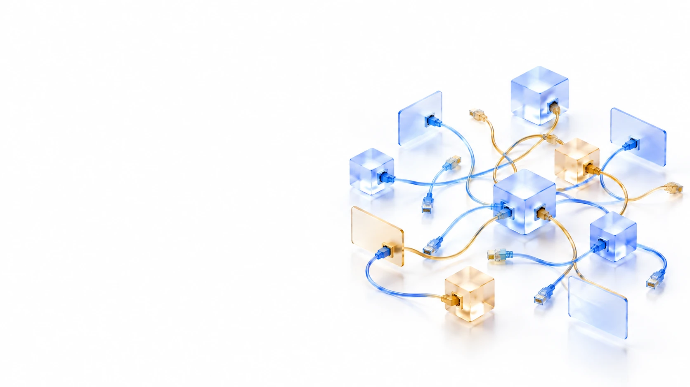

До внедрения /
Как может быть сейчас
- Обращения поступают из разных каналов
- Порядок работы зависит от сотрудников
- Информация хранится в разных системах и файлах
- Статус сделки приходится уточнять вручную
- Повторяющиеся действия выполняются сотрудниками
- Для контроля нужно собирать данные из разных источников